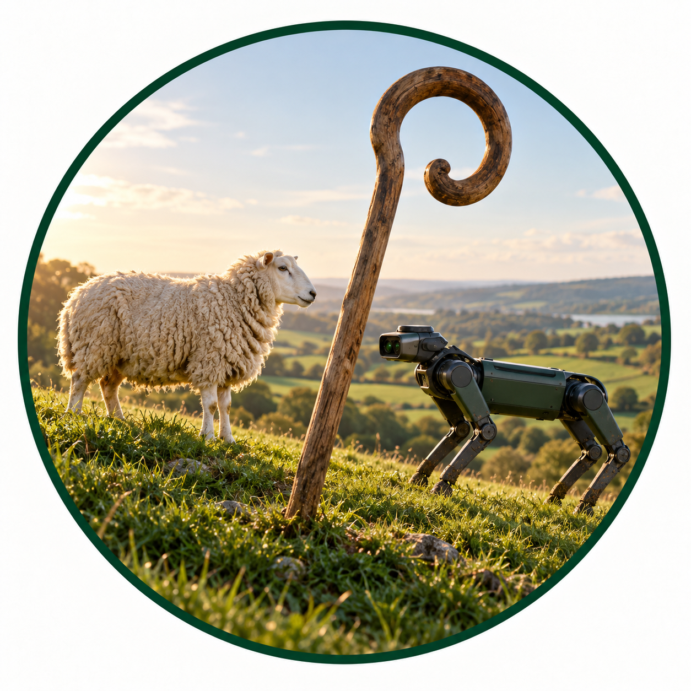

Auto Shepherd / Project overview
One connected system for animal-aware shepherding.
Auto Shepherd brings aerial observation, flock perception, simulation, field communications and supervised ground robotics into one practical research programme. Each subsystem can develop independently while contributing to a shared picture of the animals and the field.

Subsystems and ethical practice
Five connected subsystems and cross-cutting ethicsDrone control
Controls the aerial platform and brings flight planning, telemetry and video into the field system.
Open subsystem >Vision
Detects and tracks sheep in aerial video, then maps flock positions into a shared geographic frame.
Open subsystem >Simulation
Models flock and robot behaviour for repeatable experiments, prediction and synthetic training data.
Open subsystem >Communication
Carries shared messages, commands and telemetry between robots, operators and field radio links.
Open subsystem >Dog control
Localises and guides the ground robot under human supervision, with safety and animal welfare in view.
Open subsystem >Ethics
Develops welfare-centred guidance for responsible research and use of robots around animals.
Open ethics page >System architecture
A field system assembled from many kinds of intelligence.
Auto Shepherd brings aerial sensing, animal localisation, simulation, communications and robot-dog control into one shared research programme. The map below follows the working pipeline and will grow with the project poster.
System map
Five linked subsystemsProgramme shape
Each work package can stand alone while contributing to a common loop: observe the animals, understand their movement, decide what should happen next, and communicate that decision safely.
Collaborative research
Supporting research projects
Focused studies move Auto Shepherd forward one practical question at a time. Each project strengthens part of the wider system, creates reusable evidence, and offers a clear way for researchers and collaborators to contribute.
Research grows through collaboration.
These projects are shared to encourage curiosity, experimentation and new directions. If your work grows from something here, an acknowledgment of Auto Shepherd and the people involved is always appreciated where appropriate. We'd love to hear what you're exploring too; get in touch and let's look for opportunities to collaborate or share what we learn.
Available Projects
Open for collaborationActive Projects
In progressResearch Outputs in Preparation
Preprints, articles and submissionsCompleted Projects
System contributionsPeople and partners
Contributors
The organisers, collaborators and organisations building Auto Shepherd together.
Organisers
Project maintainersCollaborators
Active contributionsPast Contributors
Previous project contributionsCollaborating organisations
Research in partnership
Auto Shepherd brings robotics, agri-food research and field expertise together to develop useful systems for working landscapes.
Generative AI acknowledgement
Use and accountabilityGenerative AI tools may be used selectively across research and engineering activities, including literature searches and review synthesis, brainstorming and collaborative idea development, coding assistance or code generation, data analysis, graph-generation code, documentation, and outreach. Their use depends on the task: AI outputs are treated as aids or drafts, not as evidence, expert judgement, or automatically accepted results. Literature claims are checked against original sources, generated code is reviewed and tested, and analyses and visualisations are checked against the underlying data. Human contributors and maintainers remain responsible for decisions and for the provenance, originality, accuracy, and scientific reliability of material produced with AI assistance.
01 / Subsystem
Drone control
The eye in the sky: a reliable path from aircraft data to useful, deliberate field observation.
Working outline
See the field clearly, then decide what the aircraft should do next.
Streaming, telemetry, camera pose and future autonomy belong together here. The page will grow with the drone control package.
Components
Architecture / Drone02 / Subsystem
Vision
Make a moving flock measurable: detect individuals, follow them over time, and place them back on the map.
Working outline
From aerial pixels to a persistent picture of the flock.
Computer vision, tracking and geo-referencing form the bridge between drone observation and decisions made elsewhere in the system.
Components
Architecture / Vision03 / Subsystem
Simulation
Build a place to test flocking, control strategies and cross-system behaviour before the next field run.
Working outline
A controllable rehearsal space for natural systems.
Simulation ties together organic flocking, robot-dog influence and synthetic data so new ideas can be explored with repeatable conditions.
Components
Architecture / Simulation04 / Subsystem
Communication
Keep the distributed system coherent when its robots, radios and operators are spread across the field.
Working outline
The shared language and infrastructure between groups.
Messages, serial bridges and empirical radio studies make the wider shepherding system possible beyond a single machine or network.
Components
Architecture / Communication05 / Subsystem
Dog control
Bring the shepherding decision to ground level through a robot dog that can be supervised, tested and trusted.
Working outline
Translate shared understanding into careful movement.
This page will hold the robot-dog interface, control modes, safety constraints and the behaviours that connect autonomy to animal welfare.
Components
Architecture / Dog control06 / Cross-cutting practice
Ethics and animal welfare
Responsible robotics starts with the animals and people affected by it. This work sits alongside the technical architecture, asking what appropriate design, research and field use should look like.
Research focus
Set clear expectations for robotics around farm animals.
The work considers animal welfare, responsible human oversight, relevant regulation and the perspectives of farmers, veterinary professionals and animal-welfare organisations.
Proposed whitepaper
Open research projectDevelop a practical whitepaper outlining considerations and guidance for the design, evaluation and use of robots around animals. The work will bring together evidence and stakeholder perspectives; it is intended to inform discussion, not replace legal or veterinary advice.
View the project brief